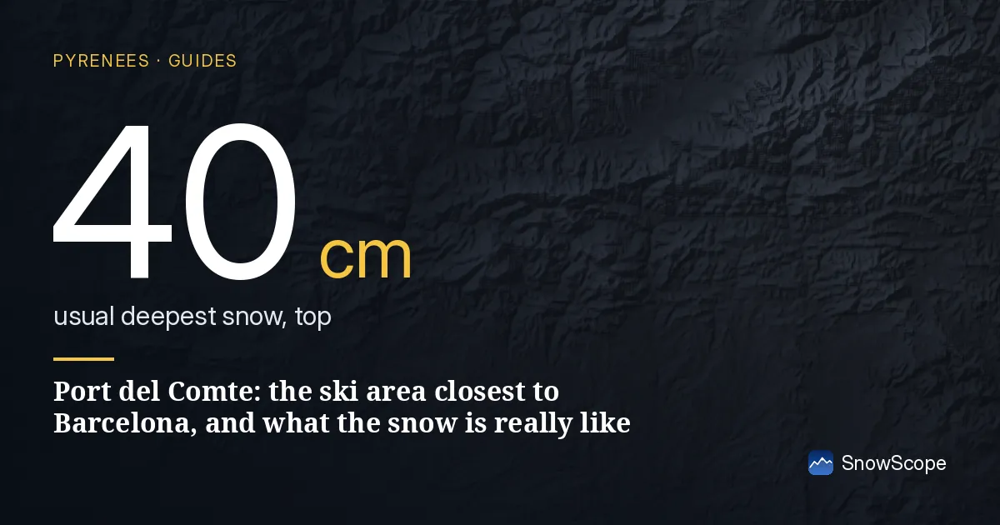

Port del Comte: the ski area closest to Barcelona, and what the snow is really like
Port del Comte is the ski area many Barcelona families reach first: a short drive up from Solsona to a plateau between 1744 m and 2122 m, with 27 km of mapped runs on 13 lifts. It is a pre-Pyrenean mountain, not a high one, and our history of 46 past winters is honest about what that means: the snow is mostly made, and the natural cover arrives late and leaves early.
See the live snow forecast for Estació d'esquí Port del Comte in the SnowScope appSnow depth, powder alerts and the 3D map, free.

A thin natural cover
The usual winter peak is 26 cm at the base, 33 cm at mid-mountain (1933 m) and 40 cm at the top. The richest past winter reached 62 cm at mid-mountain, the poorest 10 cm. In a usual December the natural depth at mid-mountain is 4 cm, in January 8 cm and in February 11 cm. The runs you ski are built by snowmaking on top of that.
When it does snow: January and February
The first snow lies at mid-mountain by November 27 in half of the winters. The best week is ISO week 6, in early February, with a usual 14 cm at mid-mountain. February is the deepest month at the top with 13 cm in a usual year; a generous February reaches 45 cm.
How to time a day trip
Natural snow here comes in episodes: a Mediterranean storm that pushes up against the pre-Pyrenees, then a quick melt in the sun. The days after such a storm are the ones to drive up for. Snow is on the ground at mid-mountain for 77 days in a usual winter, which is why the cold nights for snowmaking matter more than the forecast of snowfall.
Spring comes early
By March the usual depth at the top is down to 4 cm, and the last natural snow leaves mid-mountain by April 13 in half of the winters. Plan the season as January and February, with December and March as bonuses.
Month by month at three heights
In December a usual winter has 3 cm at the base (1744 m), 4 cm at mid-mountain (1933 m) and 5 cm at the top (2122 m). In January a usual winter has 6 cm at the base (1744 m), 8 cm at mid-mountain (1933 m) and 10 cm at the top (2122 m). In February a usual winter has 8 cm at the base (1744 m), 11 cm at mid-mountain (1933 m) and 13 cm at the top (2122 m).
In March a usual winter has 2 cm at the base (1744 m), 3 cm at mid-mountain (1933 m) and 4 cm at the top (2122 m). In April a usual winter has 0 cm at the base (1744 m), 0 cm at mid-mountain (1933 m) and 0 cm at the top (2122 m).
A poor winter and a rich winter
The spread matters as much as the middle. At mid-mountain, nine of ten past Februarys had at least 0 cm and one in ten had 36 cm or more; at the top the same range runs from 0 to 45 cm.
Over the whole winter the peak at mid-mountain ran from 10 cm in the poorest past winter to 62 cm in the richest, around a usual 33 cm; at the top from 11 to 72 cm around 40 cm. Snow lay on the ground at mid-mountain for 77 days in a usual winter, and the first snow of the season settled there by November 27 in half of the winters. These are These values for the area over 46 past winters, not resort measurements; they describe what to expect, not what the groomers will add.
46 winters: little change, because there was little to lose
The usual peak at the top went from 41 cm in the first 15 winters of our record to 38 cm in the last 15. Days with snow on the ground at mid-mountain went from 87 to 50. Last winter's peak at mid-mountain was 50 cm.
Tips for skiers
- Go in the days after a Mediterranean storm, in January or February.
- Expect groomed, machine-made runs; the natural cover is the exception, not the base.
- Our depths are an estimate for the area from past winters, not resort measurements; the open runs are on the official site.
- For reliable natural snow, the Vall d'Aran or the Cerdanya resorts are the next step up.
References and credits
- Wikipedia, 'Port del Comte', retrieved 22 November 2026: ski area in the Solsonès, Lleida, pre-Pyrenees. es.wikipedia.org/wiki/Port_del_Comte
About these numbers
Snow numbers: SnowScope snow history, 46 past winters (1980-81 to 2025-26) at three heights of the resort (an estimate for an area, not resort reports). Lift, run and access facts: the sources listed below, checked on the date shown.
Official avalanche bulletins: ICGC – Butlletí de perill d'allaus (Catalunya)
Cite this report
For research, teaching or the press: the numbers and charts are free to reuse under CC BY 4.0 with this citation.
SnowScope (2026), Port del Comte: the ski area closest to Barcelona, and what the snow is really like, https://snowscope.app/blog/en/2026/11/port-del-comte-snow-altitude-guide-nearest-ski-to-barcelona.html, accessed 2026-11-22
SnowScope (Atlas Labs). (2026, November 22). Port del Comte: the ski area closest to Barcelona, and what the snow is really like. SnowScope snow reports. https://snowscope.app/blog/en/2026/11/port-del-comte-snow-altitude-guide-nearest-ski-to-barcelona.html
BibTeX
@misc{snowscope2026portdelcomtesnowaltitude,
author = {{SnowScope (Atlas Labs)}},
title = {Port del Comte: the ski area closest to Barcelona, and what the snow is really like},
year = {2026},
month = nov,
howpublished = {\url{https://snowscope.app/blog/en/2026/11/port-del-comte-snow-altitude-guide-nearest-ski-to-barcelona.html}},
note = {Published 2026-11-22 11:19 UTC; accessed 2026-11-22}
}· CC BY 4.0 · Methods, data and tools →
Estació d'esquí Port del Comte: snow and temperature by height, this winter vs last (tools) →
Follow Estació d'esquí Port del Comte
Free: a message when fresh snow is coming, and the forecast every morning.
More snow reports

Gavarnie-Gèdre leads the Pyrenees with 26 cm on upper slopes on 22 November. Snow coverage has tripled in two days across the region.

Cauterets Cirque du Lys leads the Pyrenees with 24 cm at the top on 22 November. Heavy snow forecast for 25 November will push coverage from 44 to 51 resorts.

La Pierre Saint-Martin snow forecast: up to 42 cm expected by 26 November (Pyrenees). At Astun, the freezing level reaches 1,960 m to 3,170 m on 24 …